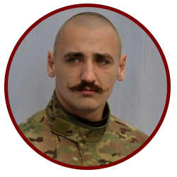
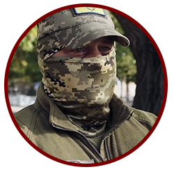
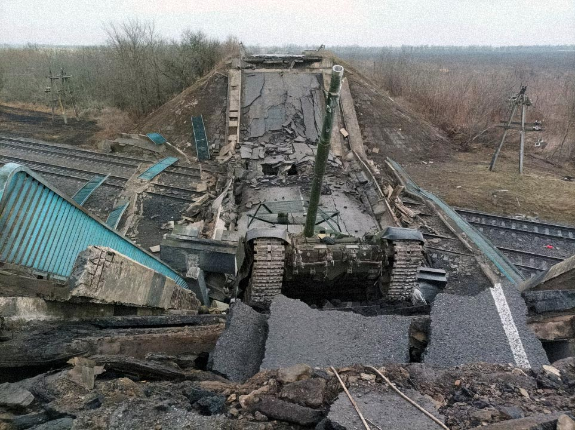
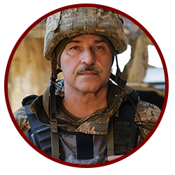
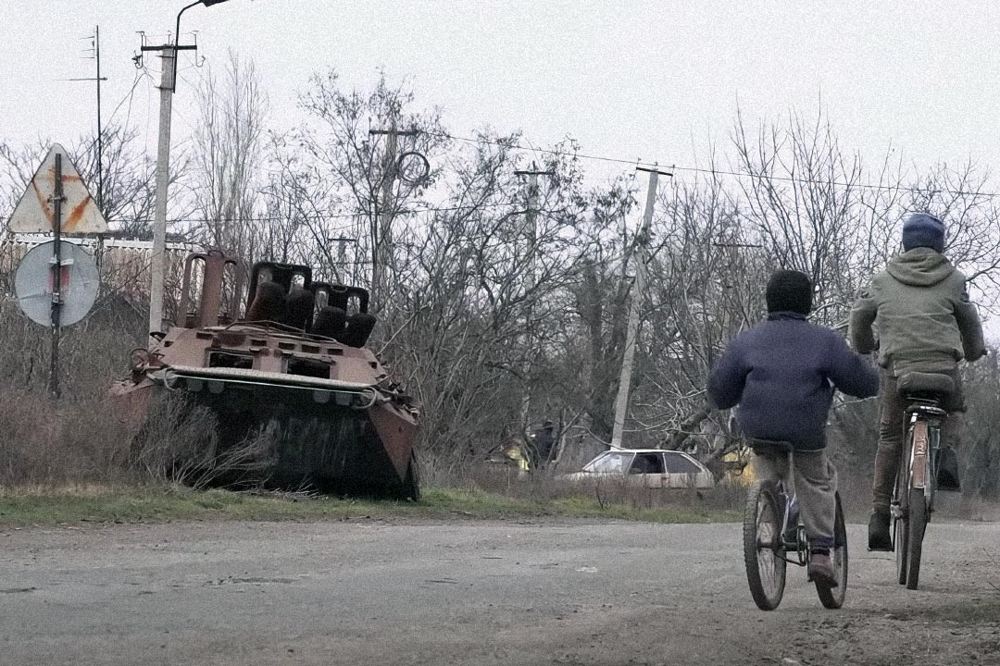
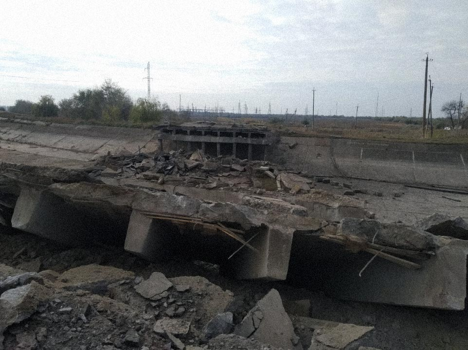

НЕЗЛАМНИЙ МИКОЛАЇВ
Як українські воїни
обороняли місто та область
НЕЗЛАМНИЙ МИКОЛАЇВ
Як українські воїни
обороняли місто та область
24 лютого близько 5 ранку росіяни завдали перших ракетних ударів по Миколаєву. Відтоді вони почали свій наступ на область, яку їм частково вдалося окупувати. Ворог проводив розвідку боєм, однак підкорити обласний центр так і не зміг.
Nikcenter візуалізував, як росіяни наступали на Миколаївщину, а Збройні сили України обороняли місто та, зрештою, звільняли населені пункти області від ворога. Військові - безпосередні учасники цих історичних подій - розповіли журналістам про бої, у яких брали участь, захищаючи Миколаївщину, оцінили наміри і сили противника. Карта доповнена фото і відеоматеріалами, на яких зафіксовані бої, російські атаки і наслідки обстрілів.
24 лютого
Близько 5:00 росіяни завдали перших ракетних ударів по аеродрому Кульбакине. Удари по обʼєкту продовжувалися протягом дня.
"Я почув звук, підійшов до вікна і побачив спалахи. Перші думки: або диверсія, або почалася війна. Заліз в інтернет, побачив звернення Путіна. «А, все, війна».
Ударів було кілька і в основному по території аеродрому. Постраждала цивільна, така тренувальна авіація, з якої, наприклад, здійснювали стрибки на аеродромі.
Потім протягом дня ще завдавали ударів по аеродрому. Кульбакино - це можливість повністю контролювати повітряний простір", - житель Кульбакиного, свідок обстрілу аеродрому 24 лютого.
24 лютого
Близько 7:00 удари по Очакову. Було атаковано військовий порт і радар.
{kind=link}
25 лютого
Близько 22:00 росіяни обстріляли склад паливно-мастильних матеріалів на Херсонському шосе, що спричинило велику пожежу.
{kind=link}
25 лютого
Бій між 28-ю ОМБр імені лицарів Зимового походу і російським десантом біля Коблевого. Втрати ворога - не менше 20 осіб, знищено катер росіян.
26 лютого
Нічний обстріл Миколаєва, вибухи у Центральному та Корабельному районах.
26 лютого
Російська техніка в районі села Шевченкове. Спроби прориву до Миколаєва з напрямку Херсона через Мішково-Погорілівське кільце та Тернівку.

"Херсонський напрям на підступах до Посад-Покровського, Шевченкового був, напевно, найбільш трофейним та результативним", - Ілля Зелінський, військовослужбовець добровольчого підрозділу "Бузький Гард"
{kind=link}
26 лютого
Відбувся бій в районі Тернівського кільця за участі 79 ОДШБр.
1 березня
Росіяни зайшли у Баштанку. Бої у місті та в Баштанському районі. 123 бригада ТРО відбиває ворога, цивільні власноруч зупиняють ворожі війська.

«1 березня, коли зайшла колона ворога у Баштанку, весь особовий склад побіг їй на перекір. Зустрічали з початку Баштанки і через усе місто по головній вулиці вони рухались.
Колона була довга, техніка була різна: КАМАЗи, БТРи, БМП, УРАЛи. Техніки дуже багато було, дуже. Особовий склад в КАМАЗах їхав тентованих, ми їх теж розстрілювали», - Хантер, військовий 123 бригади територіальної оборони.
1 березня
Наслідки боїв у Баштанці 1 березня 2022 року
{kind=link}
{kind=link}
{kind=link}
{kind=link}
{kind=link}
{kind=link}
«Вони зайшли зі сторони Доброго (село). Я тільки заскочив до магазину, бросив причіп, взяв жінку. Тільки доїхали до центру, почали бити там. Я схопив мисливську рушницю і з центру почали їх там вже розбивати.
БТРи, джипи, КАМАЗи військові, ГРАДи. Всі мисливці Баштанки, почали битися всі. Хто з лопатою бігав, хто зі своєю зброєю. А потім ми взяли в полон двох орків», - Олександр Черніков, цивільний, брав участь у боях за Баштанку.
2 березня
ЗСУ "відпрацювали" по окупантах на Єланецькому напрямку.
2 березня
Бій у Калинівці при спробі ворога пройти до Миколаєва. Зруйновано міст, частина російських військ повернулась назад у бік Баштанки. Трофей - 2 "Тигри".
{kind=link}

"Під Миколаєвом, з Калинівки до Снігурівки, був добре потріпаний 247 полк, їхні рештки довго лежали по узбіччі доріг в неприродних формах. Були величезні втрати військової техніки.
Тільки 59 бригада затрофеїлиєа майже дивізіон гармат Д-30, техніка та озброєння були на будь-який смак", - Ілля Зелінський, військовослужбовець зведеного підрозділу "Бузький Гард".
«2 березня ми готувалися прийняти бій у Калинівці, вийшли на декілька точок у селі. Із собою у когось була зброя, підготували ящики з коктейлями Молотова. На міст тоді виїхав танк, який обстрілював Калинівку. Того дня міст було зруйновано прямо з танком на ньому, він стояв з піднятою баштою, а особовий склад встиг втекти», - учасники Калинівського ДФТГ.
2 березня
У районі Баловного висадились 4 гелікоптери ворожого десанту. Сили оборони ліквідували противника.
2 березня
Ворожий десант висадився на аеродромі, його було ліквідовано.
2 березня
Розпочались бої у Вознесенську. Підірвано мости, щоб зашкодити просуванню окупантів. Бої за Вознесенськ тривали протягом 2-3 березня.
«За словами одного з наших командирів, який потрапив у полон, росіяни були в шоці. Вони не очікували, що місцеве населення у спортивних костюмах з автоматами буде так протистояти… Заходили БТРи, танки, УРАЛи.
Частина військових, видно було, що професійні. Нам потрапили військові трофеї - штурмові щити, штурмові комбінезони. Там були штурмові підрозділи, які по оснащенню були заточені під штурм міста, будівель. А деякі - з-під палки воювали», - Олег, офіцер батальйону 123-ї бригади територіальної оборони.
"Противник відступав під тиском бригад, насамперед 80-ї бригади. Ключову роль, на мій погляд, мав бій за Вознесенськ, саме там ворога почали відтискати і розтискали це кільце", - Ілля Зелінський, військовослужбовець зведеного підрозділу "Бузький Гард".

«У Вознесенську вже дійсно були значно більші сили, якими ворог штурмував наші позиції і, очевидно, що він рвався в це місто для того, аби захопити міст через Південний Буг. Або, якщо б ми його зруйнували, то навести там переправу.
І якщо б їм це вдалося, і вони переправилися через Південний Буг, то пішли б на Одесу, швидше за все. Миколаїв, таким чином, був би в повній облозі», - Ярослав Чепурний, пресофіцер 79-ї окремої десантно-штурмової Таврійської бригади.
2 березня
Група мисливців забрала в окупантів танк біля села Червоне у напрямку Снігурівки.
3 березня
На території Снігурівської громади йшли бої з російськими військами. З боку росіян ймовірно брали участь підрозділи 49-ї Загальновійськової армії.
«Після розбитої колони була техніка противника з документами, які треба було б якось передати. Складність полягала в тому, що наш передній край був в районі калинівського кільця, ворог був в Пісках та Христофорівці, знаходився на територіях Шевченківської громади, міст був вже підірваний, тому дорога була одна, вона була вглиб території, яку ми не контролювали від слова зовсім.
Ну ми вирішили здійснити цю задачу, не вникаючи в деталі, екіпаж відвіз зброю та забрав «Тигр» з документами, на якому повернувся в Миколаїв. Його передали на потреби ОВА, наразі навіть не знаю хто ним користується», Ілля Зелінський, військовослужбовець добровольчого підрозділу «Бузький Гард»
3 березня
Двічі розбито російські колони у Пісках.
«Цікавою була ситуація навколо початкового їхнього просування на напрямку Лупареве-Лимани. Було чітке розуміння, що їм потрібен захід на Глиноземний завод, навіть попри те, що це - власність російського олігарха і один з директорів, призначений перед війною, - колишній член радбезу РФ.
На території підприємства знаходиться коса, старе місце переправи на Волоську косу, звідки могли б перейти на Очаківську сторону, закривши місто. Розуміючи ці плани, ми лишили кілька сюрпризів противнику на території підприємства, які б дуже потужно їх зустріли», - Ілля Зелінський, військовослужбовець добровольчого підрозділу «Бузький Гард».
4 березня
Бій у районі аеродрому Кульбакине. Росіяни відійшли на Миколаївський авіаремонтний завод (НАРП).
4 березня
У мікрорайоні Кульбакине в Миколаєві українськими десантниками було розбито та знищено один із підрозділів 247-го гвардійського десантно-штурмового полку РФ.
{kind=link}
4 березня
Вранці росіяни увійшли до Миколаєва зі сторони Балабанівки та Галицинового. 123 бригада прийняла бій у Корабельному районі міста. З боку росіян було задіяно 108 десантно-штурмовий полк 7 десантно-штурмової дивізії ПДВ ЗС РФ.
4 березня
У Прибузькому українська артилерія розбила ворожу колону.
5 березня
У передмісті Миколаєва підбили "Тигр" та взяли у полон чотирьох окупантів.
5 березня
Росіян вибито з Миколаєва, з Кульбакиного, з НАРП. Ворог тікав у бік Шевченкового, Луча, Снігурівки. Збито чотири гелікоптери та один літак окупантів.
6 березня
Знову спроба росіян зайти у Миколаїв через Кульбакине. За повідомленнями влади, ймовірно, проводили розвідку.
7 березня
Росіяни завдали удару ракетою "Калібр" по казармі 79-ї бригади. Втрати серед українських військових.
7 березня
Бій у Миколаївському міжнародному аеропорту. ЗСУ та патрульні відбили атаку росіян.
«Дві батальйонно-тактичні групи 79-ї бригади брали участь в боях, які були 7, 8 і 9 березня. Це, в принципі, були найважчі бої, особливо 7 березня, коли противник з напрямку аеропорту спробував зайти на північну околицю Миколаєва.
Він дійшов до околиці і там наткнувся на наші позиції. Наші хлопці прийняли бій, було знищено кілька одиниць бронетехніки за допомогою протитанкових ракет. Відповідно ворог відступив», - Ярослав Чепурний, пресофіцер 79-ї окремої десантно-штурмової Таврійської бригади.
7 березня
Росіяни йшли на місто з трьох напрямків, були відбиті артилерією. У Баловному відбувся ближній бій, у якому брали участь військові 79-ї ОДШБр і патрульна поліція.
11 березня
ЗСУ в ніч з 10 на 11 березня у Баштанському районі вдарили по колоні росіян, яка рухалась у бік Вознесенська.
11 березня
Бій під Гурʼївкою, окупанти намагалися втекти. З 10 по 14 березня росіяни розташувались на підступах до села і обстрілювали його із "Градів".
12 березня
Ворожі війська намагалися переправитися через річку Південний Буг, проте переправу між селами Піски і Трихати розбила артилерія ЗСУ
14 березня
ЗСУ відновили контроль над трасою Нова Одеса - Миколаїв.
15 березня
Під Миколаєвом українські військові захопили позиції російської артилерії разом з технікою.
{kind=link}
{kind=link}
16 березня
Ворог намагається закріпитися в районах населених пунктів Киселівка, Первомайське, Михайло-Ларине, Піски, Добре і Снігурівка.
18 березня
Українські сили на південь від Миколаєва відкинули росіян до кордонів Херсонської області.
18 березня
Росіяни завдали удару по військових казармах у Миколаєві. Великі втрати серед морпіхів.
{kind=link}
{kind=link}
19 березня
Бій при спробі росіян висунутися зі Снігурівки в бік Березнегуватого. Снігурівка була остаточно захоплена.
19 березня
ЗСУ повернули під контроль населені пункти Засілля, Білозерка.
{kind=link}

27 березня
Спроба ЗСУ відбити Снігурівку. Російські війська відійшли на околиці.
10 квітня
Росіяни намагались покращити становище, але ЗСУ відтіснили їх з позицій. Зенітники збили російський винищувач-бомбардувальник СУ-34, який намагався атакувати Миколаїв.
21 квітня
Російські війська намагались покращити своє тактичне положення та наблизитись до Миколаєва завдяки обстрілам, але не мали успіху.
29 серпня
Жорстокі бої в районі населених пунктів Любомирівка, Тернові Поди та Шмідтове.
9 листопада
Українські військові знищили склад ворожих боєприпасів біля Снігурівки.
9 листопада
ЗСУ провели розвідку боєм на трьох ділянках: Посад-Покровській, Снігурівській та в напрямку Білозірки. Вдалося закріпитися на північній околиці Снігурівки вздовж залізничних колій.
{kind=link}

10 листопада
ЗСУ звільнили Снігурівку. Місто було звільнено силами 312-го та 131-го окремих розвідувальних батальйонів та суміжних підрозділів.
10 листопада
Збройні сили України звільнили решту окупованої Миколаївщини (крім Кінбурнської коси) та правобережну Херсонщину. Серед деокупованих сел - Киселівка, де росіяни навмисно пошкодили ділянку водогону, щоб позбавити жителів Миколаєва води.
11 листопада
ЗСУ звільнили Херсон від росіян. У деокупації правобережної Херсонщини взяли участь 24 підрозділи Сил оборони України.
12 листопада
Операція з висадки десанту ЗСУ на Кінбурнську косу.
12 листопада
На Кінбурській косі зберігається присутність ворожих військ, продовжуються атаки на протилежний берег.
Підрозділи, військові частини та державні силові структури, які брали участь у обороні та звільненні Миколаївської області:
1 окремий Феодосійський батальйон морської піхоти
123 бригада територіальної оборони
137 батальйон морської піхоти
145 окремий ремонтно-відновлювальний полк
16 окремий батальйон НГУ
19 полк охорони громадського порядку (НГУ)
198 навчальний центр ВМС
10 морська авіаційна бригада ім. Героя України полковника Ігоря Бедзая
235 міжвидовий центр підготовки військових частин та підрозділів
241 загальновійськовий полігон оперативного командування «Південь»
299 бригада тактичної авіації ім. генерал-лейтенанта Василя Нікіфорова
36 окрема бригада морської піхоти ім. контрадмірала Михайла Білинського
46 окрема аеромобільна бригада
59 окрема мотопіхотна бригада ім. Якова Гандзюка
73 морський центр спеціальних операцій ім. кошового отамана Антіна Головатого
79 окрема десантно-штурмова Таврійська бригада
80 окрема десантно-штурмова бригада
Військова служба правопорядку (Миколаїв)
Головне управління Нацполіції в Миколаївській та Херсонській областях
Группа «А» Служби безпеки України
Державна прикордонна служба України
Державна служба з надзвичайних ситуацій
Екіпаж фрегату «Гетьман Сагайдачний»
Миколаївський військово-морський шпиталь
Управління патрульної поліції Миколаївської та Херсонської областей
Управління військової контррозвідки СБУ
Управління СБУ Миколаївської області